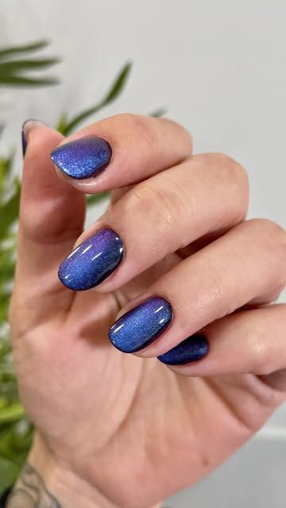
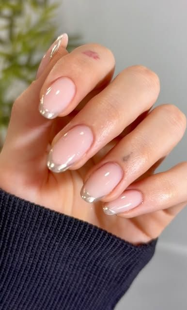

Manicura
Cuidado de cutículas, forma y esmaltado. Te asesoramos sobre el largo, la forma y el color que mejor te quedan.
Uñas premium by Mary Danciu
Manicura y pedicura con productos de calidad y herramientas esterilizadas. Más de 12 años de experiencia. Te atendemos en español, inglés y rumano.
5,0 en Google · 100 reseñas
Mueve el cursor: es el imán
Es un esmalte con partículas magnéticas: con un imán colocamos la línea de luz donde quieras. Elige un color y pasa el dedo o el cursor por encima de las uñas.
Lo quiero así






Cuidado de cutículas, forma y esmaltado. Te asesoramos sobre el largo, la forma y el color que mejor te quedan.
Pies cuidados y uñas perfectas, con el mismo mimo que en las manos.
Francesa, cromado, ojo de gato, brillo y nail art. Tráenos tu idea o déjate aconsejar.
Trabajamos con productos de alta calidad que cumplen la normativa europea y esterilizamos todas las herramientas.
Precios y duración: pregúntanos por WhatsApp y te respondemos enseguida.

Mary lleva más de 12 años haciendo uñas. Perfeccionista en cada trazo, te recomienda lo que mejor va con tus manos y tu día a día.
«El mejor sitio de manicura de toda Girona. Mary es simplemente especial […] siempre sabe qué recomendarte y cómo salir absolutamente enamorada de tus uñas»
Google
«Estoy encantada con el trabajo de Mary, es encantadora y una gran profesional! Desde que voy con ella mis manos están bien cuidadas y mimadas.»
Google
«Desde que voy a Yaya nails mis uñas están más cuidadas que nunca. Mary lo hace todo con cariño y te asesora de 10!»
Google
«Perfeccionista en cada trazo, con un resultado impecable!»
Google